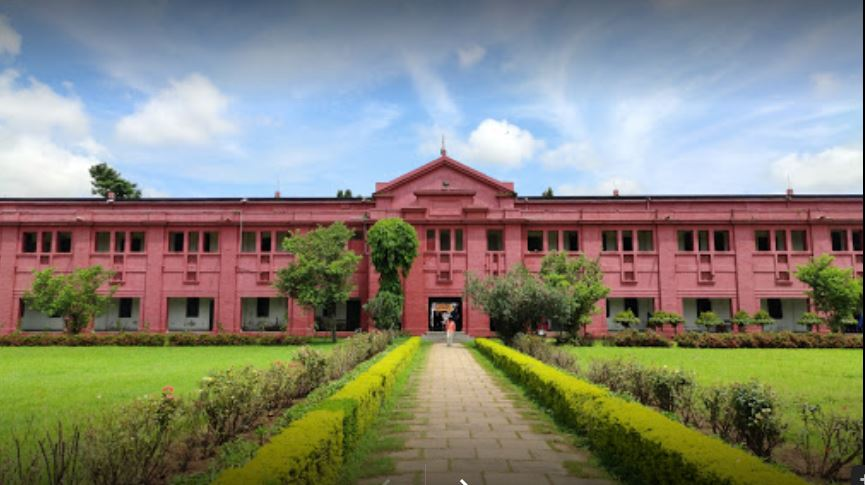

4.DEGREE COLLEGES
1. BJB Autonomous College BHUBANESWAR
B.J.B Autonomous College is one of the premier educational institutions of the State. It came into existence in 1957 through the initiative of the Government of Orissa. It is located over an area of 28.2 acres of land. It was an affiliated college of Utkal University till 1998. It has been functioning as an autonomous institution since 1999 following the conferment of autonomy by the UGC. The college was placed in Grade ‘A’ in 2004 after an assessment by the National Assessment and Accreditation Council (NAAC)The college offers Undergraduate education with 16 different honours subjects leading to Bachelor of Arts, 9 honours subjects leading to Bachelor of Science and 1 honours subject leading to Bachelor of Commerce Degree.

2. OUAT BHUBANESWAR
Orissa University Of Agriculture & Technology (OUAT), Bhubaneswar established in 1962, has collaborated with IIT Roorkee and IIT Delhi for agricultural research and education. OUAT is ranked 101st by the NIRF for the Overall performance of the University in 2019. The university offers UG, PG, and Doctoral programs in the fields of Agriculture, Home Science, Horticulture, Forestry, Agricultural Engineering, Botany, Zoology, Chemistry, Physics, Mathematics, Biotechnology, Microbiology, Computer Science, Agricultural Business Management, and Bioinformatics. Admission to the program is based on an entrance exam conducted by the University. Students with ICAR test scores are exempted from the entrance exam. The application process for the same in both online and offline.

3. UTKAL UNIVERSITY BHUBANESWAR
Utkal University Bhubaneswar is a public state university established in the year 1943. The university is approved by the University Grants Commission (UGC). It has been accredited by the National Assessment and Accreditation Council (NAAC) with an ‘A+’ grade. With a campus covering an area of 399.9 acres, Utkal University has 27 postgraduate departments. Fourteen PG departments of the University have been granted Departmental Research Support/Centre of Advance Studies status by the University Grants Commission. Presently, 381 colleges are affiliated with the university. The university has secured 87th rank in the University category in NIRF 2021 Ranking with an overall score of 39.8 out of 100. It had secured 96th rank in the same category in NIRF 2020 Rankings.

4. SCS PURI
SCS Autonomous College, Puri was established in 1944 under the Ministry of Human Resource Development (MHRD), Government of India. The college was initially started in the building of Puri Zilla School. The college was named after Mahamohopadhyaya Chandra Sekhar Singh Samanta, who was an Odishan Astro-scientist. The college was initially started with the motive of providing education to students in Economics, History, Mathematics, Logic and Sanskrit as optional subjects and English and Odia as compulsory Modern Indian Language. But later, many other undergraduate and postgraduate programmes were also started. Samanta Chandra Sekhara Autonomous College lies over an area of 27 acres of land providing various academic and infrastructural facilities to the students and faculty members including laboratories, sports, gymnasium, hostels, canteen, central library etc.

5. RAVENSHAW UNIVERSITY CUTTAK
Ravenshaw University Cuttack was established in 2006 and is a public co-ed university that offers a wide variety of courses to its students. RU Cuttack has more than 8,000 enrolled students and has more than 100 faculty members. The campus has a size of 80 acres. RU Cuttack has been approved by the UGC and has been accredited by NAAC with an A grade. Ravenshaw University Cuttack courses are 69 in number and are available at the UG and PG levels. RU Cuttack courses have many specializations. Many facilities are also provided to the students and the staff by the university. RU Cuttack facilities include medical facilities, hostel facilities, sports, library, WiFi, IT infrastructure, guest rooms, etc. Ravenshaw University Cuttack scholarships are offered to the students to support them with their studies. The scholarships offered by the university include the state government, central government, and UGC scholarships.

6. RAMADEVI WOMEN'S COLLEGE BHUBANESWAR
Ramadevi Women’s College, Bhubaneswar become the first Women's University of Orissa. The college, which was started in 1964, saw various transformation before it was renamed as Rama Devi Women's University in 2015. The university is affiliating university to 46 women's colleges. Location: Ramadevi Women’s College, Bhubaneswar is located at Bhoinagar P.O., Bhubaneswar, Odisha. Biju Patnaik International Airport is about 6 km from the college campus. Bhubaneswar New Junction is about 12 km from the college campus. The nearest bus depot is about 10 km from the college.

7. SRI SRI UNIVERSITY BHUBANESWAR
Sri Sri University (SSU) is located in Bhubaneshwar. It is recognized by the UGC and AICTE. SSU is ranked 1st in State & Zone & 8th in India under Best Private Universities by IIRF in 2021. Sri Sri University offers various UG, PG, Diploma, Integrated, and Certificate programs. The courses are offered under 8 faculties such as Agriculture, Architecture, Management Studies, Health and Wellness, and Arts, etc.Sri Sri University admission is based on both merit and entrance examination. The university conducts SSU CET entrance test for admission to various UG and PG courses. Sri Sri University also accepts scores of national-level entrance exams such as JEE Main, NATA, CAT/XAT/MAT/CMAT/ATMA for admission to the B.E/B.Tech, B.Arch, and MBA, respectively.

8. NIST BERHAMPUR
National Institute of Science & Technology (NIST), Odisha offers UG, PG and PhD program in the dicipline of Engineering, Science, and Management. The fees for the flagship course B.Tech is INR 4.70 Lacs whereas NIST fees range from INR 1 Lacs to 5 Lacs. Admission to B.Tech is on the basis of valid score in JEE Main whereas for M.Tech preference will be given to students who have valid GATE scores. Final admission for M.Tech is on the basis of OJEE counselling.